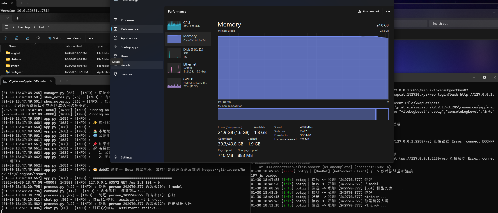

你好

你好（是的这里又是一个你好，早上好中午好下午好）
我们正在参加大学生计算机比赛，现在五人组里有三个成员，选题是AI与教辅，如果你想了解请点击
这个巨大的蓝色按钮
我们现在需要技术型的大佬，所以如果你会相关技术，我们会很高兴你的到来。
我们需要的类型有：
- 有过相关比赛经验的大佬
- AI通识类型（懂得如何本地部署AI、模型微调、知识库编辑与形成、微调代码撰写、API嫁接、打包成品、快速上手第三方平台等）
- 计算机通识（编程大佬、集搜与极搜，快速搜索，高质量搜索等等）
- 网页后端（后端功能的实现、嫁接模块与实现高级功能等）
- 服务器持有者（长期稳定的公网IP服务器，配置不算太差）
- 富哥富姐（是的，非常需要）
当然如果你也符合下面这些类型，也会很欢迎你的加入：
最后，如果你想参加，请直接微信（微信ID：MaxPricefield）联系我，诚邀大佬！！！！！！